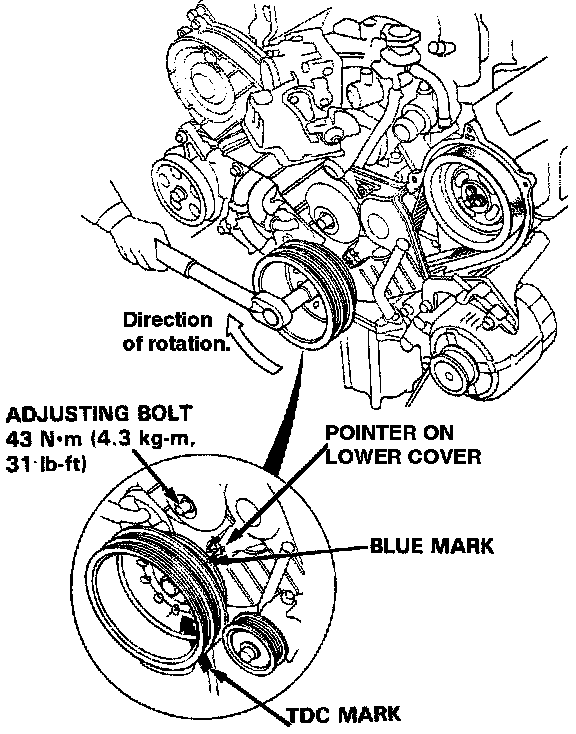

Timing Belt Tensioner: Adjustments
Tension Adjustment
CAUTION:
- Always adjust timing belt tension with the engine cold.
- Do not rotate the crankshaft when adjusting bolt is loose.
NOTE:
- Tensioner is spring-loaded to apply proper tension to the belt automatically after making the following adjustment.
- Inspect the timing belt before adjusting the belt tension.
- Always rotate the crankshaft clockwise when viewed from the pulley side. Rotating it counterclockwise may result in improper adjustment of the belt tension.

1. Remove the left upper cover.
2. Set the No 1 piston at TDC.
3. Rotate the crankshaft clockwise 9-teeth on camshaft pulley (The blue mark on crankshaft pulleys should line up with the pointer on lower cover).
4. Loosen the timing belt adjusting bolt 180°.
5. Tighten the adjusting bolt, torque to 43 N.m (4.3 kg.m, 31 lb-ft).